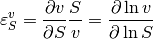
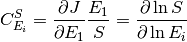
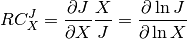
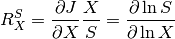

Metabolic Control Analysis¶
Preliminaries¶
Metabolic control analysis is the study of how sensitive the system is to pertubration and how those perturbations progagate through the network. Two kinds of sensitivity are defined, systems and local. The local sensitivities are described by the elasticities. These are defined as follows:

Given a reaction rate  , the elasticity describes how a given effector of the reaction step affects
the reaction rate. Because the definition is in terms of partial deriviatives, any effector that is perturbed assumes
that all other potential effectors are unchanged.
, the elasticity describes how a given effector of the reaction step affects
the reaction rate. Because the definition is in terms of partial deriviatives, any effector that is perturbed assumes
that all other potential effectors are unchanged.
The system sensitivities are described by the control and response coefficients. These come in two forms, flux and concentration. The flux control coefficients measures how senstive a given flux is to a perturbation in the local rate of a reaction step. Often the local rate is perturbed by changing the enzyme concdntration at the step. In this siutation the flux control coefficident is defined as follow:

Likewise the concentration control coefficient is defined by:

where is a given species. The response coefficients measure the sensitivity of a flux or species concentration to a perturbation in some external effector. The are defined by:


where  is the external effector.
is the external effector.
The following methods allow users to obtain various metabolic control coefficients.
| RoadRunner.getUnscaledFluxControlCoefficientMatrix() | TODO docs |
| RoadRunner.getUnscaledConcentrationControlCoefficientMatrix() | Calculate the unscaled concentration control coefficent matrix. |
| RoadRunner.getUnscaledElasticityMatrix() | TODO docs |
| RoadRunner.getUnscaledSpeciesElasticity(...) | Get a single species elasticity value |
| RoadRunner.getScaledElasticityMatrix | |
| RoadRunner.getScaledFloatingSpeciesElasticity(...) | Compute the scaled elasticity for a given reaction and given species. |
| RoadRunner.getScaledFluxControlCoefficientMatrix() | Calculate the the matrix of scaled flux control coefficients. |
| RoadRunner.getScaledConcentrationControlCoefficientMatrix() | TODO docs |
| RoadRunner.getuCC | |
| RoadRunner.getCC(variable, parameter) | Get scaled a single control coefficient with respect to a global parameter. |
| RoadRunner.getuEE | |
| RoadRunner.getEE(reactionId, parameterId[, ...]) | Retireve a single elasticity coefficient. |